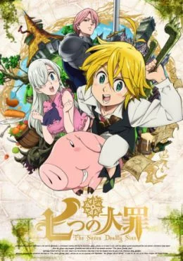

Los “Siete Pecados Capitales”, un grupo de caballeros malignos que conspiraron para derrocar al Reino de Britania, se dice que fueron erradicados por los Caballeros Sagrados, aunque algunos dicen que aún viven. Diez años después, los Caballeros Sagrados dieron un golpe de estado y asesinaron al rey, convirtiéndose en los nuevos y tiránicos regidores del reino. Elizabeth, la única hija del rey, emprende un viaje para encontrar a los “Siete Pecados Capitales” y conseguir su ayuda para recuperar el reino.